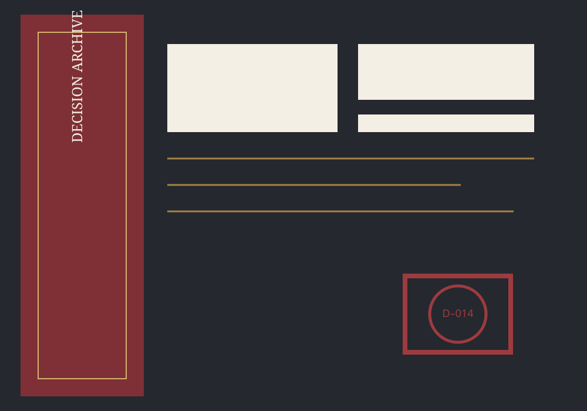
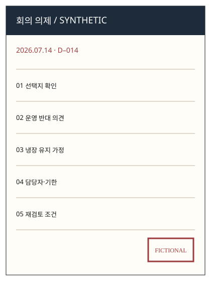
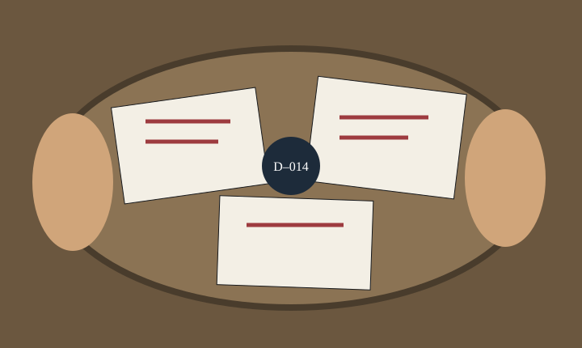
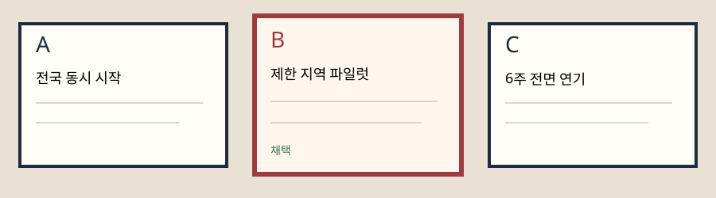
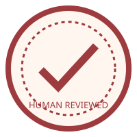
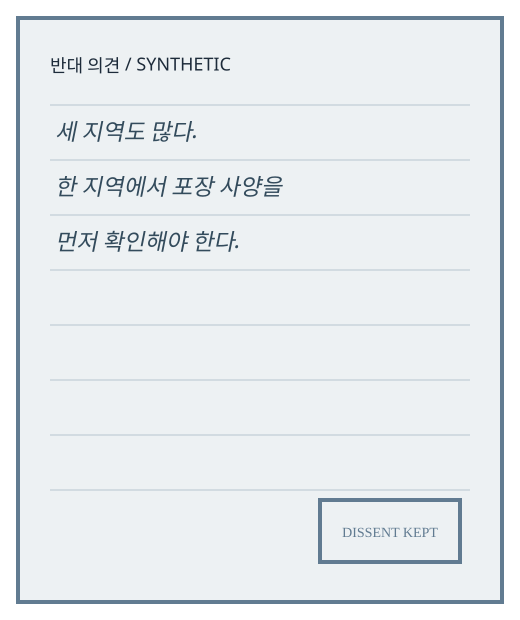
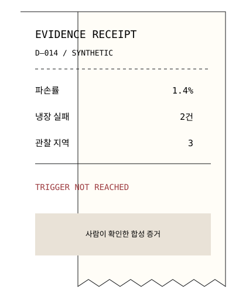
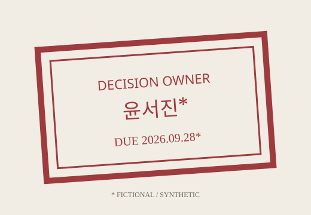
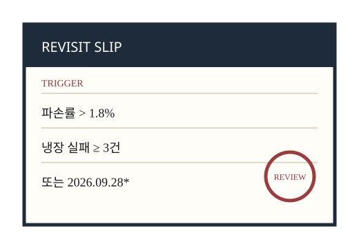

D–014 · DECISION DOSSIER
제한 지역 3주 파일럿을 먼저 시작한다
예정된 9월 일정은 유지하되, 전국 확대는 자동 승인하지 않는다. 세 지역에서 냉장 유지와 파손률을 확인한 뒤 사람의 재검토를 거친다.
- 회의일
- 2026.07.14 — synthetic
- 결정권자
- 운영위원회 — fictional
- 담당자
- 윤서진 — fictional
- 기한
- 2026.09.28 — synthetic
PROPOSED BUSINESS 28 · UI ONLY
Decision Archive · 무엇을 왜 결정했는가를 오래 남기는 결정 원장실

DECISION DOSSIER · 2026–07–14
파도식탁 연구소와 윤서진은 fictional fixture입니다. 실제 조직·회의·서명·수치가 아닙니다.
DECISION INDEX / 2026

D–014 · DECISION DOSSIER
예정된 9월 일정은 유지하되, 전국 확대는 자동 승인하지 않는다. 세 지역에서 냉장 유지와 파손률을 확인한 뒤 사람의 재검토를 거친다.


REASON CHAIN LOCK
“세 지역도 많다. 한 지역에서 포장 사양부터 확인해야 한다.” — 합성 운영 반대 의견

HUMAN REVIEWED상태: complete
MINORITY VIEW / MARGIN 04
“전국 확대 전에는 배송 품질보다 포장 공정의 편차를 먼저 줄여야 한다.”합성 발언 · 실제 인터뷰 아님

미확인 항목은 완료 도장과 별개로 계속 노출됩니다.
FOLLOW-UP EVIDENCE / D–014


냉장 유지 실패 2건. 재검토 조건에는 도달하지 않았으나 야간 배송 구간을 별도 관찰하기로 함.

결정
왜
반대·미확인
한 지역부터 시작해야 한다는 반대 의견 유지야간 배송 냉장 유지율은 미확인담당·재검토
윤서진* · 2026.09.28*파손률 1.8% 초과 또는 냉장 실패 3건 이상